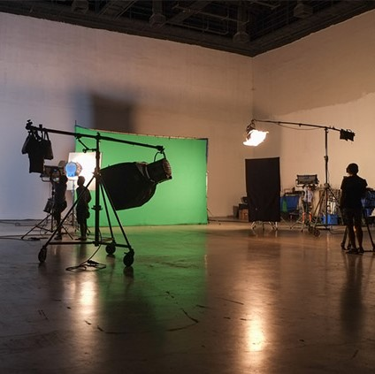

Projects
These are some of the projects I worked on during my undergraduate and graduate studies. Creating content is something I really enjoy doing.
View ProjectsPhotography
I enjoy traveling to popular tourist destinations in order to capture timeless moments. Here are some of the most recent photographs I've taken. I can't wait to travel more and share my adventures with everyone.
View Photography

Videos
I had the honor of being chosen to direct a short film for the cinema & televsion arts department at CSUN,"Pair of Thieves." I also created other short films throughout my undergrad. My visions were able to come to life thanks to my fantastic crewmates.
View Videos